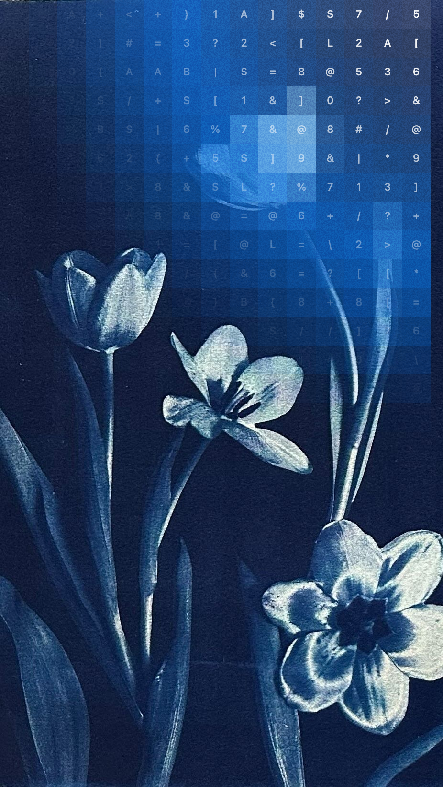
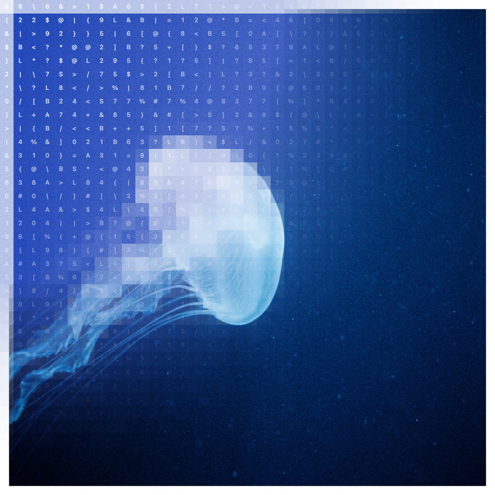
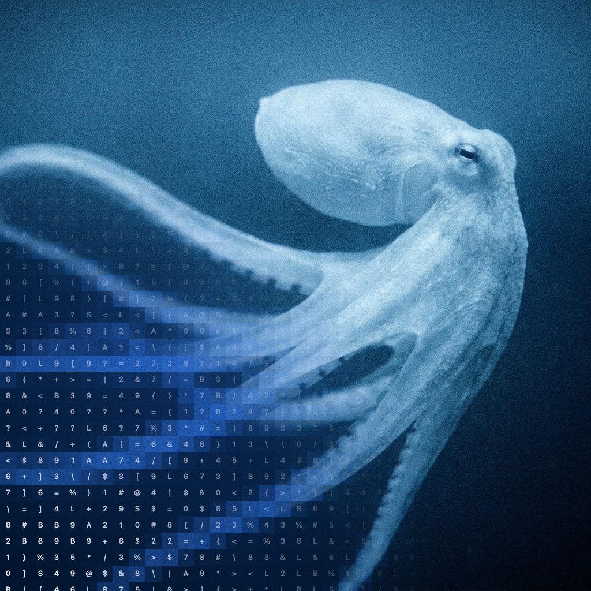
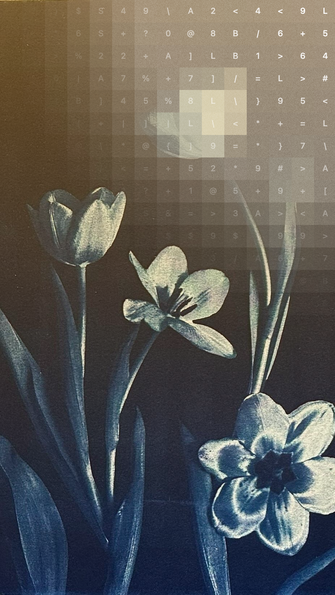
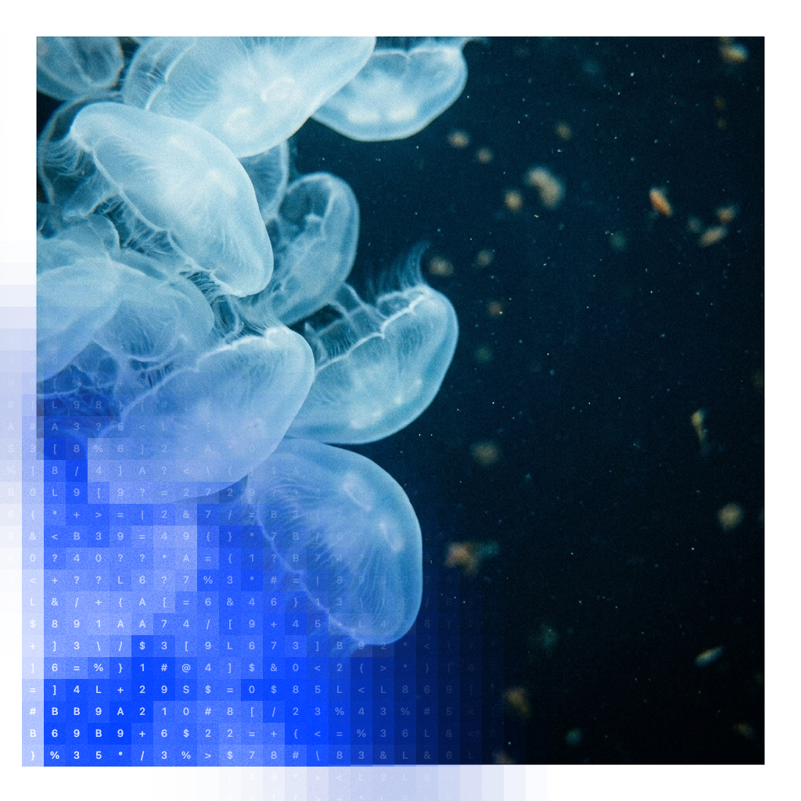

Table of contents
Agenda
- 01 Context
- 02 Our approach
- 03 Initial goals
- 04 Our findings
- 05 Moving forward
- 06 Appendix: Best practices and things to avoid
AI audit report
Palindrom 2026

The BBFC invested significantly in two AI products: CLEARD (automated international age ratings from metadata) and MIRA (AI-driven content tagging and feature extraction). The combined vision was an end-to-end, AI-assisted classification pipeline capable of supporting multiple territories with minimal human intervention. Despite significant investment, the technology has not reached its original goals. Continuing without a reset risks further spend without resolution.
Q1: What is the status of the project? What has actually been delivered? Is the product roadmap still viable?
Q2: Why did the project not meet expectations? How does the project score across the Commercial, Product, Technology and Data & AI dimensions?
Q3: What's next? Should the board stop, continue or pivot the project? What does a realistic path forward look like?
Independent investigation to uncover practical blockers to the project's goals. 26 interviews with technical, product, commercial stakeholders, and domain experts over 20 business days. Findings shared weekly with David Austin.

We triangulated findings using:
We focused on the practical blockers to BBFC's goals.
| Strategy & Commercial | Clear strategic goals and differentiation. Commercial readiness - Metering, billing, client and operational concerns. |
| Product | Development practices and how they support delivery velocity. |
| Technology | Tech processes, TechOps. How performance is measured, whether evaluation supports scale and whether evaluation supports the goal. |
| Data & AI | Accuracy & evaluation readiness - metadata (CLEARD) and ground truth. Data & labelling quality. ML core, hybrid logic, Langflow. |

| Self-driving cars | Film classification | |
|---|---|---|
| What? | self-driving cars | film classification |
| Where? | all roads | all types of content |
| When? | all countries and jurisdictions | all countries and jurisdictions |
| Conditions | weather | cultural conditions |
This does not imply that caution is wrong -- only that it must be managed explicitly rather than implicitly shaping technical and product decisions.
Global, structural need. Regulatory burden is real and growing. AI adoption pressure creates urgency.
Right problem at the right moment. External forces (streaming, AI, regulation) are aligned.
Assumed, not proven. No clear customer is defined. Does the organisation know who is actually buying from the BBFC?
Assumed for early. Buyers or users not clearly separated.
Current product is not sellable in its current form.
No clear value ladder. No price point with reasonable fit content. Product access doesn't exist.
There is a real problem (esp. with exponential AI content growth). Product boundary is fuzzy.
Human in the loop not designed. Trust is assumed by model, not engineered.
What's being attempted is technically plausible, but needs substantial amount of rework.
The organisation is a leading authority in this space with a 100-year-old history.

Our project began with a strong focus on model accuracy as the primary indicator of readiness.
Our investigation found that this focus masked deeper, more fundamental issues that must be resolved before accuracy can meaningfully translate into a viable product - including unclear product scope, unstable data foundations, and misaligned decision-making.
| Option | Viability | Time-to-Revenue | Cost-to-Complete | Recommendation |
|---|---|---|---|---|
| Option A: Continue current roadmap | Very low | > 24 months | High, uncertain | Not recommended. The foundational issues (misalignment, missing product layer, immature AI models, absence of HITL) would persist. |
| Option B: Pivot to narrow 0→1 product with human-in-the-loop | Medium | 6-12 months | Moderate, bounded | Conditionally recommended. This is conditional on the organisation's willingness to execute a genuine programme reset. |
| Option C: Stop programme entirely | High certainty | n/a | Zero | Legitimate and rational choice. It delivers immediate certainty and zero further cost. Palindrom frames this as an acceptable outcome (not a failure) if the conditions for a successful pivot cannot be met. |
Explicitly reset the programme. Acknowledge that CLEAR / NBA are still in the 0→1 phase. Narrow activity from "accuracy at scale" to "trust in a narrow domain". Fix the lack of strong AI product and tech leadership at companies and projects.
Narrow the scope aggressively. One bettors, one goal. Collect minimum assumptions and prioritise them. Move away from a broad focus on accelerating our internal learning. Human-in-the-loop becomes the model.
Redefine success metrics. Move single-number accuracy as the primary goal. Define "good" around user confidence and First-class metrics. Create a product team. Deliver a clearly bounced offering that scales access to a small pilot group. Treat this as a learning product, not a finished one.
We understand AI systems, know exactly when it works and when it does not.
The BBFC (British Board of Film Classification) invested significantly in two AI products: CLEARD (automated international age ratings from metadata) and MIRA (AI-driven content tagging and feature extraction). The combined vision was an end-to-end AI classification pipeline capable of supporting multiple territories with different regulatory requirements.
Despite significant investment, commercial and governance outcomes remain unclear, and the technology has not reached its original goals. Continuing without a clear exit milestone risks further spend without resolution.
Palindrom was engaged to conduct an independent investigation to uncover the practical blockers to the project's goals.
Commercial, product, and technology functions are misaligned, preventing cohesive execution. In well-functioning teams, unrealistic goals are typically challenged early; we found little evidence of this corrective pushback here. Decision-making in a high-uncertainty context lacks information and speed of execution. The ingredients of a category-defining product are present, but the organisation is acting like a scale-up before proving real product-market fit.
Our overall assessment is that deeper, more fundamental issues must be resolved before accuracy can meaningfully translate into a viable product -- including unclear product scope, unreliable data infrastructure, and misaligned decision-making. A viable pivot would require addressing foundational issues in scope, ownership, and success definition, not incremental improvements.

By definition, all innovative projects have risks -- otherwise they would be incremental improvements and not innovative.
Risks can be:
- market -- does the market need this?
- tech -- can we build it given the current technical constraints?
This should be a living document with thought-provoking questions.
For example, here's a question from a real document:
- Is it possible to build a real-time AI product with 0.5s latency given our data?
The team should validate the riskiest assumptions first instead of last.
This is an uncomfortable but necessary exercise.
This is not a one-off but continuous
Who do we need as partners? What are the core functions they'll provide? What risks are there from depending on those partners?
What data or inputs does the AI use? Do we have it? Can we get it? What are the ethical considerations?
What value does the AI create? For whom? What AI technology does this use? Why is this the right fit?
What technology skills are needed? What AI skills are needed? Who will use this - "go to market"? What training is needed?
Who uses the AI directly? Who decides to buy? Who are the stakeholders? What are the adoption barriers?
What compute is needed? What data storage? What are the running costs? What is needed to train / re-train?
What does the AI produce? How is that used? What is the latency? What are the quality metrics?
Who provides feedback to improve the AI? Who labels data or validates outputs? How is the training loop maintained?
How does the AI reach users? What integrations are needed? How is output delivered or surfaced?
Training costs, Compute, Storage, Maintenance, Licensing
Subscription, Licensing, Transaction, Productivity savings
Employees, Customers, Regulators, Partners, Investors
Accepting risk, thinking about mitigations early-on, talking about risks and often, creating a document to track the riskiest assumptions.
Denying risks, not talking about them, not calling out "elephants in the room".
Giving the project a real chance, setting clear expectations and clear stop loss criteria.
Not giving enough time for the project to be successful, early stopping, no pre-agreed stop loss criteria.
Iterating very quickly, testing assumptions early on and fast, attacking the "riskiest hypothesis".
Iterating slow, testing assumptions too late, focusing on easy tasks rather than difficult problems, low impact busy work.
Open communication, information sharing across functions.
Secretive environment, information silos.
Use the AI business model canvas for alignment (iteratively).
No alignment between the functions or fixed business plan.
The three waves of every company by Robert X. Cringely as described in his book "Accidental Empires".
Setup: CEO is a domain expert
Outcome: CEO, AI Product Manager, AI Tech Lead, Domain experts. Strong but no in-house AI expertise.
Setup: Domain + business development heavy
Outcome: CEO, AI Product Manager, AI Tech Lead, 1 x AI engineers, Domain experts. Balanced for early commercial traction.
Setup: Tech Lead is extremely strong in AI and product, has built a similar product before
Outcome: CEO, AI/CTO, Domain experts. Lean team with deep technical ownership.
Has run a commercially successful AI company, 0-25% equity. Tangential experience in the media industry, content moderation or equivalent.
No previous AI company or product owner of an AI product. No previous technology experience in the media industry, content moderation or equivalent.
Has used the product firsthand for a commercially successful AI company, 0-25% T. High IQ, can speak the commercial and tech languages. Tangential experience in the media industry, content moderation or equivalent.
No previous product. Only corporate experience. Tangential experience in the media industry, content moderation or equivalent.
Has run this technology for a commercially successful AI company, 0-25% T. Expertise with AI tools; excels at ML plus all the online services that make it work. Tangential experience in the media industry, content moderation or equivalent.
Mid management tech experience. Low ownership in the media industry, content moderation or equivalent.
| Best practice | Anti-pattern |
|---|---|
| Assembling a team of highly entrepreneurial generalists who are comfortable with risk. | Hiring lots of people who are not comfortable in a high uncertainty and high ambiguity environment. |
| Hiring people with startup experience is a plus and de-risks the project. | Hiring people who have never worked in a small startup before may be risky. |
| Creating a high-trust environment with radical transparency where the best ideas win. | Creating a low-trust environment, blame culture, politics. |
| High freedom, high ownership, clear goals and high accountability. | Micro-management, low ownership, weakly defined goals, no accountability. |
Best practices and things to avoid.
Use a feedback loop: Human-in-the-loop reviews AI decisions and corrects errors, improving the AI with human assistance while providing value.
Improving the AI to achieve 95%+ accuracy in the lab without human-in-the-loop.
Deploy to production with human review gates before acting on high-stakes AI decisions.
Deploying AI directly to decision with no human checkpoint when error consequences are severe.
Build human correction data into the training loop so the model improves over real-world usage.
Treating lab accuracy as sufficient and skipping real-world edge case capture.
Tesla's Autopilot is a best-practice example of human-in-the-loop at scale. The driver remains responsible for decisions; human corrections are harvested to continuously improve the AI model.